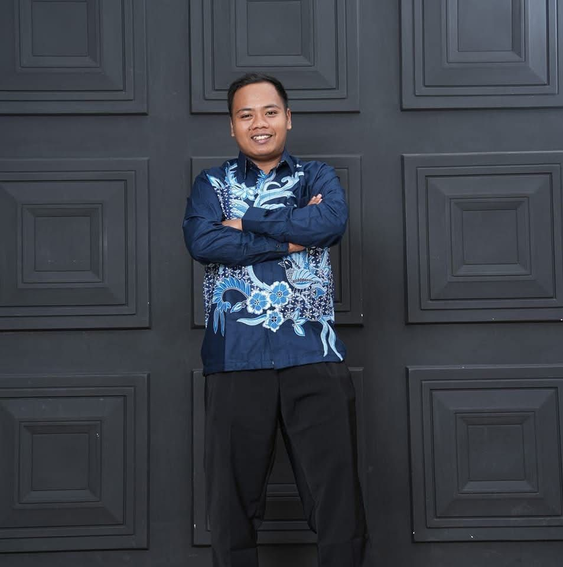

RPP (Rencana Pelaksanaan Pembelajaran)
Skenario pembelajaran terstruktur yang memandu jalannya proses penyampaian materi di kelas maupun bengkel.
Lihat DetailPortfolio ini merupakan refleksi awal sebagai fondasi dasar karakter untuk menjadi seorang pendidik yang profesional, berdedikasi, dan inspiratif.

Halo, perkenalkan nama saya Fajar Afrianto. Saya berasal dari Bantul, Daerah Istimewa Yogyakarta, sebuah daerah yang terkenal dengan keunikan budayanya, yaitu budaya gotong royong yang masih kental dan kehidupan masyarakat yang sederhana namun penuh kebersamaan. Nilai-nilai luhur dari daerah asal ini telah membentuk karakter saya untuk selalu menghargai keberagaman dan pentingnya komunitas.
Inspirasi terbesar saya untuk menjadi seorang guru profesional berawal dari [Ceritakan sosok inspiratif atau pengalaman pribadi yang menyentuh hati]. Saya menyadari bahwa pendidikan adalah fondasi untuk membangun peradaban. Tujuan utama saya bukan sekadar mentransfer ilmu, melainkan menjadi fasilitator yang mampu membangkitkan potensi terbaik setiap peserta didik, membentuk karakter mereka, dan mempersiapkan mereka menghadapi masa depan.
"Pendidikan bukan tentang memanaskan pikiran kosong dengan fakta-fakta, melainkan tentang menyalakan api keingintahuan dan kebijaksanaan dalam hati setiap anak."
— Socrates / [Nama Tokoh Inspiratif]
Kumpulan dokumen dan hasil karya sebagai bukti pelaksanaan pembelajaran.
Skenario pembelajaran terstruktur yang memandu jalannya proses penyampaian materi di kelas maupun bengkel.
Lihat DetailRekaman visual praktik mengajar langsung yang menampilkan dinamika interaksi, pengelolaan kelas, dan penguasaan materi.
Lihat DetailMateri pembelajaran komprehensif yang disusun untuk mendukung pemahaman teori dan praktik kejuruan siswa.
Lihat DetailAlat bantu visual, digital, atau fisik yang mempermudah demonstrasi dan pemahaman siswa terhadap materi kompleks.
Lihat DetailLembar panduan kerja terstruktur untuk melatih keterampilan psikomotorik dan penyelesaian masalah di bengkel.
Lihat DetailInstrumen evaluasi dan rubrik objektif untuk mengukur kompetensi praktik dan pencapaian target pembelajaran.
Lihat DetailRefleksi mendalam terhadap rancangan dan perangkat pembelajaran yang telah disusun.
Selama proses penyusunan produk pembelajaran, kendala utama yang saya hadapi meliputi [contoh: penyesuaian alokasi waktu dengan keluasan materi, perumusan indikator yang selaras, atau mencari media interaktif]. Tantangan ini menuntut saya untuk lebih kreatif dalam merancang aktivitas.
Saya mengadopsi teori [contoh: Konstruktivisme Vygotsky / Problem-Based Learning]. Konsep ini memfasilitasi siswa untuk membangun pengetahuan sendiri melalui kolaborasi dan pemecahan masalah kontekstual yang relevan dengan kehidupan.
Keberhasilan penerapan produk pembelajaran didukung oleh: [contoh: relevansi LKPD dengan minat siswa, kejelasan instruksi, media visual yang menarik, dan antusiasme siswa dalam diskusi kelompok].
Jika diterapkan pada situasi kelas berbeda, komponen yang perlu diubah adalah [contoh: metode asesmen yang lebih variatif, penyederhanaan media digital menjadi konvensional, atau modifikasi kesulitan tugas].
Berdasarkan penilaian guru pamong, rancangan pembelajaran mendapat masukan positif pada [Sebutkan keunggulan]. Catatan perbaikan adalah [Sebutkan saran perbaikan], yang membantu menyempurnakan RPP/Modul Ajar.
Unduh Lampiran 7Evaluasi praktik mengajar selama 3 siklus. Siklus I berfokus pada [Pengelolaan kelas]. Siklus II menunjukkan progres pada [Interaksi siswa], dan Siklus III memantapkan kompetensi [Penggunaan model secara utuh].
Unduh Lampiran 8"Menciptakan lingkungan belajar yang inklusif, inovatif, dan berpusat pada peserta didik, untuk mencetak generasi yang cerdas secara akademik dan memiliki karakter luhur sesuai Profil Pelajar Pancasila."
Menguasai materi pembelajaran mendalam dan mengaplikasikan model pembelajaran inovatif yang mengintegrasikan TPACK (Technological Pedagogical Content Knowledge).
Menjadi teladan yang memiliki empati tinggi, mampu memahami kondisi psikologis siswa, dan merangkul keberagaman di dalam kelas.
Memiliki Growth Mindset untuk terus belajar, melakukan refleksi diri, dan adaptif terhadap perkembangan pendidikan dan teknologi.